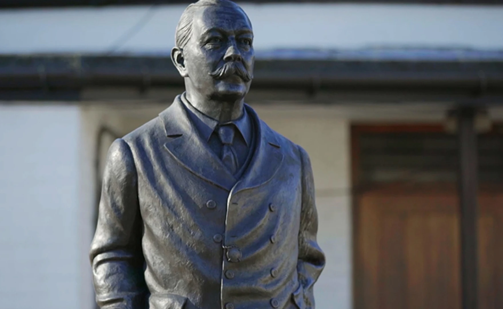

Agatha Christie and Arthur Conan Doyle wrote arguably the two greatest detectives in history. But who were they and what inspired them?
Let's explore that question!
From Doctor to Author...and more

Statue of Sir Arthur Conan Doyle in Crowborough Cross, East Sussex, UK
Arthur Conan Doyle was born in Scotland, and after attending the University of Edinburgh in 1881, he opened his own medical practice. Unfortunately, his practice was not
very successful, so he began by writing historical novels for some time before trying his hand at the nonfiction. He published his first Holmes novel A Study in Scarlet
in 1887. But, he did not stop at novels and short stories, he was also a fervent proponent of Spritualism and the Mystic Arts. After losing his son in World War I, Doyle was known
to frequent psychics, have tarot readings and explore the paranormal. He famously had a falling out with his friend Harry Houdini after Houdini revealed that his tricks were
simply just tricks and not magic. In his autobiography Doyle expressed his enjoyment of and appreciation for his long time idol Oscar Wilde, his affections for Wilde continued
on during and after the trial and imprisonment of Wilde. He would pass away at the age of 71 in his home.
Queen of the Whodunit
Statue of Agatha Christie in The Kinecroft, Wallingford, Oxfordshire, UK
Born Agatha Mary Clarissa Miller in Torquay, Devon, England. In 1914 she would marry Colonel Archibald Christie, and work as a nurse during World War I, however the two would
later divorce in 1928, but she would remarry archaeologist Max Mallowan in 1930. However, even before her second marriage she was already a wildly successful author, and was known as
the Queen of the Whodunit. She would write her first Hercule Poirot novel The Mysterious Affair at Styles in 1920, sparking one of the longest running book series in history. She would
continue the Hercule Poirot series for another 50 years. That doesn't even scratch the surface however, as she is noted to have written some 95 books, including 66 detective novels, many short
story collections, she wrote two accounts of her life and travels, 6 romance novels, she coauthored 3 mysteries, all of that in addition to composing 25 plays. Her novel And Then There Were None
is a personal favorite of mine, and is considered one of the world's best selling mystery novels, and even inspiring the movie/game Clue. Christie lived a very full life culminating in 1971 with her
appointment as Dame Commander of the Order of the British Empire. She would sadly pass away in 1976 at the age of 85.